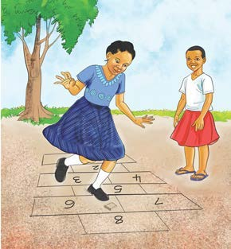
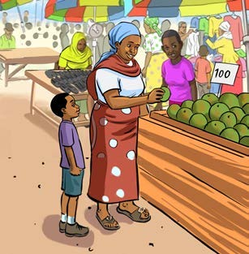
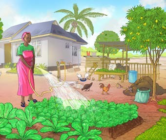
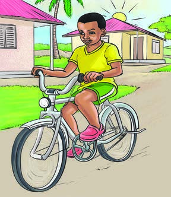
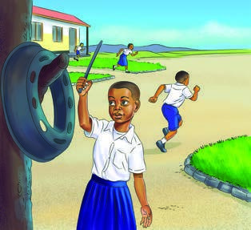
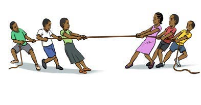
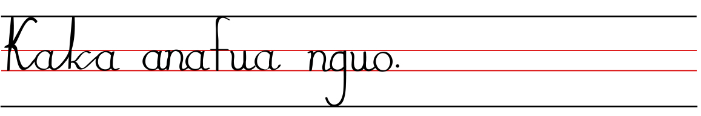

Tazama au Chunguza picha, kisha andika sentensi moja kwa mwandiko wa kuunga au Mwandiko wa Breli; tumia eneo la kuandikia, kibodi au Breli.
5.

Wasichana wawili wanacheza dama ya kuruka ardhini.Tazama au Chunguza picha, kisha andika sentensi moja kwa mwandiko wa kuunga au Mwandiko wa Breli; tumia eneo la kuandikia, kibodi au Breli.

Wasichana wawili wanacheza dama ya kuruka ardhini.Tazama au Chunguza picha, kisha andika sentensi moja kwa mwandiko wa kuunga au Mwandiko wa Breli; tumia eneo la kuandikia, kibodi au Breli.

Mwanamke na mtoto wananunua matunda sokoni.Tazama au Chunguza picha, kisha andika sentensi moja kwa mwandiko wa kuunga au Mwandiko wa Breli; tumia eneo la kuandikia, kibodi au Breli.

Mwanamke anamwagilia bustani ya mboga nyumbani.Tazama au Chunguza picha, kisha andika sentensi moja kwa mwandiko wa kuunga au Mwandiko wa Breli; tumia eneo la kuandikia, kibodi au Breli.

Mvulana anaendesha baiskeli.Tazama au Chunguza picha, kisha andika sentensi moja kwa mwandiko wa kuunga au Mwandiko wa Breli; tumia eneo la kuandikia, kibodi au Breli.

Mwanafunzi anagonga gurudumu la chuma kuashiria muda wa shule.Tazama au Chunguza picha, kisha andika sentensi moja kwa mwandiko wa kuunga au Mwandiko wa Breli; tumia eneo la kuandikia, kibodi au Breli.

Vikundi viwili vya watoto vinavuta kamba.
Kaka anafua nguo.